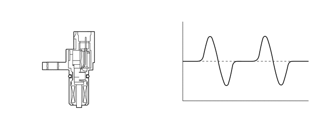
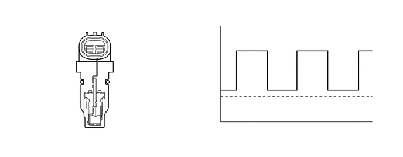
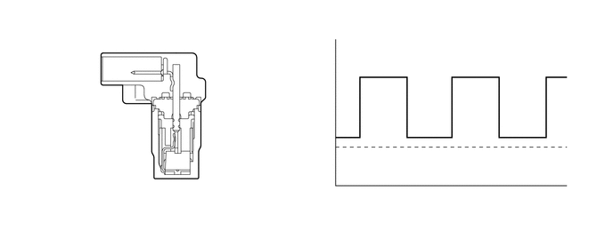

NM3140CG
_52
动力传动系
_025139
K313 CVT
_0120286
CVT 系统
DE
详情
F
K313 CVT CVT 系统 详情 变速器转速传感器
结构
a.
下表列出了各变速器转速传感器的功能。
变速器转速传感器
类型
输出信号
功能
NIN
拾波线圈
模拟信号
根据主皮带轮正时转子的旋转情况检测主皮带轮转速。
NOUT
霍尔
高/低数字信号
根据减速从动齿轮的旋转情况检测次级皮带轮转速。
NT
霍尔
高/低数字信号
根据连接至变矩器涡轮转子的前进档离合器鼓正时转子的旋转情况检测涡轮转速。
变速器转速传感器 NIN

1.615,1.719 1.177,1.719
true
2.208,2.021 1.844,2.021
true
3.542,1.24 3.958,1.469
0.417,0.229
10
false
GND
0.667,1.625 1.208,1.854
0.542,0.229
10
false
磁铁
2.229,1.938 2.573,2.167
0.344,0.229
10
false
线圈
4.781,2.25 5.958,2.5
1.177,0.25
10
false
输出波形
变速器转速传感器 NOUT

1.688,2.365 1.688,2.146
true
3.542,1.646 3.958,1.875
0.417,0.229
10
false
GND
4.802,2.26 5.979,2.51
1.177,0.25
10
false
输出波形
0.896,2.365 2.677,2.708
1.781,0.344
10
false
霍尔集成电路（霍尔集成电路的磁铁）
变速器转速传感器 NT

2.073,2.281 2.073,1.906
true
1.281,2.292 2.896,2.625
1.615,0.333
10
false
霍尔集成电路（霍尔集成电路的磁铁）
3.552,1.646 3.979,1.99
0.427,0.344
10
false
GND
4.688,2.25 6.115,2.688
1.427,0.438
10
false
输出波形